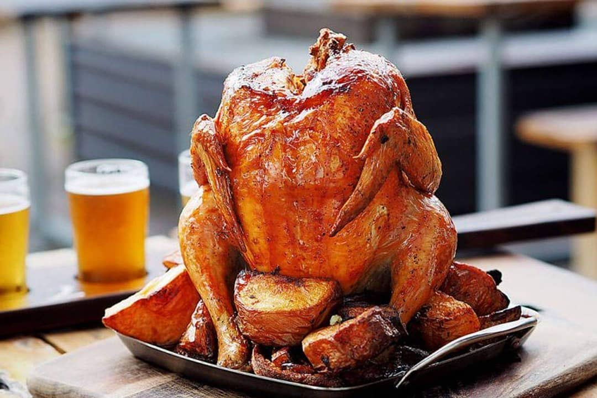

Grilované kurča podľa @tempomagazin — Normy Jedál
Grilovali ste už kurča, 🐤 no mali ste pocit, že jeho mäso bolo príliš suché či tuhé? Potom musíte vyskúšať tento recept 🍗 – opité kurča nastoknete na plechovku s pivom, ktoré sa bude počas celého grilovacieho procesu vyparovať. 😋 Ako na to? 👉 #grilovanie #grilovanekurca #opitekurca #pivo #temporecept #novyclanok #tempomagazin